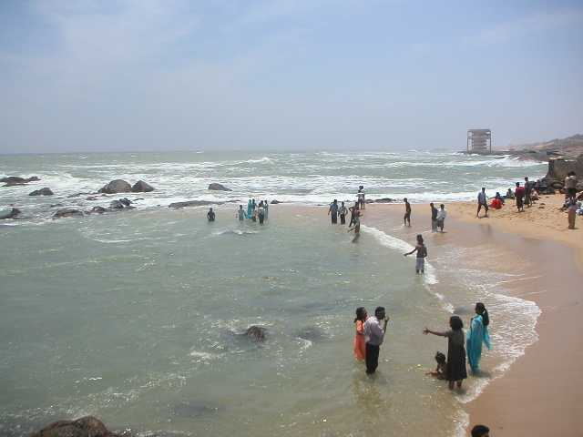

Pathanamthitta is the district headquarters of Pathanamthitta district in the state of Kerala in southern India. The district can be divided into three parts one comprising of tall hills stretching through the Western Ghats, the other the descending smaller hills forming plains and landscapes, and third the low-lying area abundant in coconut trees. The district has dense evergreen, semi-green and humid forest areas. Three important rivers Pamba, Achankovil, and Manimala flow through the district originating from different mountains of the Western Ghats Mountain range. Pathanamthitta district is a rich district. Timber is one of the most important produce and raw material for wood-based industrial units. The district is famous for its scenic beauty, fairs, festivals, and culture.
Sabarimala Temple is located at a distance of 72 km from Pathanamthitta town. It is one of the most sacred temples of Lord Ayyappa and an important Hindu pilgrimage centre in the country. The shrine is located amidst dense forests in the rough terrain of Western Ghats, inhibited by various wild species. Millions of pilgrims from all over the country assemble here during festivals “Vishnu Vilakku”, “Mandalapooja” and Vrichikam Dhanu” held in April, Nov-Dec, and January respectively.
Gavi is an Eco-Tourism project of the Kerala Development Corporation located at a distance of 109 km from Pathanamthitta surrounded by cardamom plantation, tropical forests, hills, valley, grasslands, spectacular waterfalls, and tea plantation. It has magnificent wildlife, flora, various bird species. It offers activities like trekking, wildlife watching, outdoor camping in specially built tents, and night safaris. It is a part of the Periyar Tiger Reserve and serves as a base camp for deep jungle trekkers, bird watchers, nature lovers, and research students, etc. An eco-tourist lodge in the village is located in front of a splendid lake providing a beautiful look at the lake and adjoining forest.
Pampa River of Pamba River is the longest river in the state of Kerala after Periyar and Bharathappuzha at a distance of 18 km from Pathanamthitta. It originates from Pulachimalai hill in the Peermedu plateau of Western Ghats and after nourishing and passing through many places drains into Vembanad Lake. It is a sacred river for Hindus and is known as Thriveni Sangamam-the meeting point of three rivers. The sandy banks of the river have emerged as a cultural and religious centre. An important Hindu religious convention Cherukolpuzha is held on the banks of Pamba River at Cherukole in February every year. Asia’s largest Christian convention Maramon is also held on the banks of river Pamba. Aranmula is a cultural village on the banks of Pamba.
Perunthenaruvi waterfalls in Wester Ghats are located at a distance of 36 KMs from Pathanamthitta. It is a famous tourist destination and a family picnic spot. Here the waterfalls on a rocky path into a ravine. These waterfalls are mostly famous for their wide area and not for their height. These falls ultimately merge with the waters of the Pamba River. These waterfalls become more graceful during monsoons with roaring waters and even become dangerous.
Kaviyoor Rock Temple is an ancient temple carved on a massive rough rock, situated around 28 km from district headquarters and dedicated to Lord Shiva. This temple has a lot of archaeological importance because of its similarity to Pallava-style architecture. The 8th-century monument as well as stone sculptures and carved rooms of the temple are well preserved by the archaeological department. The temple is visited by historians and travellers besides devotees. The nearest Thiruvalla railway station is 4 km away.
Paliakara Church situated in Trivuvalla around 32 km from Pathanamthitta is one of the important religious centres for Syrian Christians. The history of the church dates back to 54 A.D and the arrival of St Thomas to Kerala. The church is known for the unique incredible architecture and breath-taking beauty of its sculptures. The outer wall of the building is decked with the carved lattice and inscriptions of various saints.